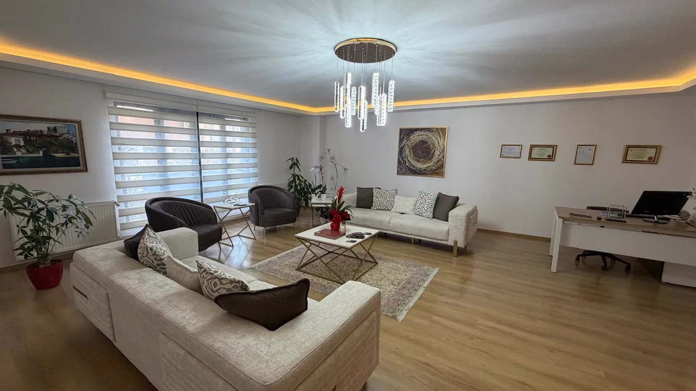
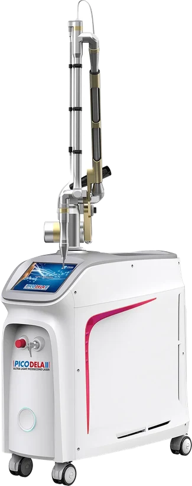
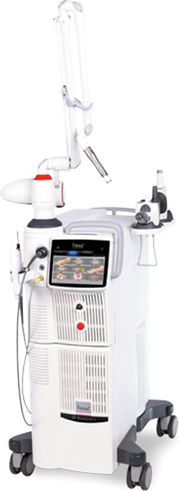
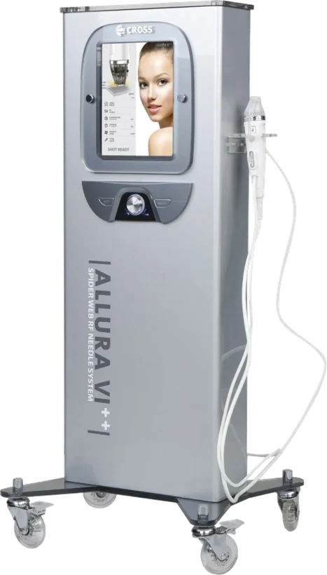
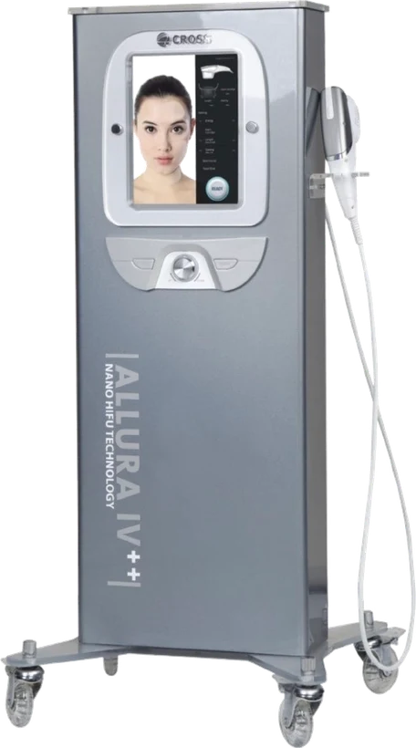
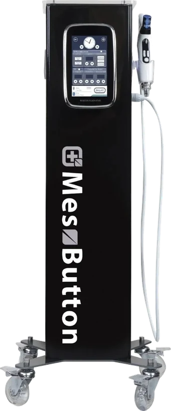

Muayenehane · Bakırköy
Bekleme salonundan cihaz odasına: Bakırköy’deki muayenehane
İçeri girdiğinizde sizi önce bekleme salonu karşılar. Muayene ve enjeksiyonlar uygulama odasında, lazer ve diğer cihaz uygulamaları ise ayrı bir cihaz odasında yapılır. Randevular tek tek verilir; her işlemi hekim kendisi uygular ve kontrolü de yine o yürütür. Aşağıda muayenehanenin düzenini adım adım bulabilirsiniz.

Nerede
Bakırköy / İstanbul
Muayenehane Cevizlik Mah. Ebuzziya Cad. No:47/1 adresindedir. Toplu taşımada Marmaray’ın Bakırköy istasyonu ve Bakırköy’e ulaşan metro hatları kullanılabilir; özel araçla sahil yolundan ya da İncirli yönünden gelinebilir. Harita ve ayrıntılı yol tarifi iletişim sayfasında yer alır.
Binayı ilk kez ziyaret edecekseniz gelmeden önce telefonla ya da WhatsApp üzerinden sorabilirsiniz; giriş tarifi kısaca paylaşılır.
Adresimiz
Cevizlik Mah. Ebuzziya Cad. No:47/1
Bakırköy / İstanbul
Açık olduğumuz saatler
Pazartesi – Cumartesi: 09:00 – 19:00
Pazar: Kapalı
Tek hekimle
Muayenehanede sizinle kim ilgileniyor?
Bu muayenehanede tek bir hekim çalışır: Uzm. Dr. Rahmi Cebeci. Sizi dinleyen, muayene eden, planı çıkaran, ürünü ve miktarı seçen, işlemi yapan ve kontrolde sonucu değerlendiren odur. Arada bilgiyi aktaran bir danışman ya da satış görüşmesi yoktur; masada yalnızca tıbbi plan konuşulur.
Bunun gündelik bir karşılığı var: uygulamadan günler sonra aklınıza bir soru takıldığında ya da bir değişiklik fark ettiğinizde, işlemin ayrıntısını bilen kişiye ulaşırsınız. Önceki muayene notları da aynı dosyada durur.
Tek hekimle çalışmanın bir başka sonucu, gün içindeki randevu sayısının sınırlı kalmasıdır. Aynı saate iki kişi alınmaz ve her randevunun süresi önceden bellidir; bu yüzden uygun bir gün için birkaç gün beklemeniz gerekebilir.
Cihazlar
Lazer ve cihaz odasında neler var?
Lazer ve enerji temelli uygulamalar, enjeksiyonların yapıldığı odadan ayrı tutulan cihaz odasında yapılır. Lazer seanslarında hem sizin hem hekimin gözleri, cihazın dalga boyuna uygun koruyucu gözlükle korunur. Hangi cihazın size uygun olduğuna muayeneden sonra karar verilir.

Pikosaniye lazer
Dövme silme, leke, karbon peeling
Uygulama sayfası
Fraksiyonel lazer
Cilt yenileme, iz ve leke
Uygulama sayfası
Altın iğne radyofrekans
Gözenek, iz, sıkılaşma
Uygulama sayfası
HIFU
Ameliyatsız sıkılaştırma
Uygulama sayfası
İğnesiz mezoterapi
İğnesiz aktif madde iletimi
Uygulama sayfasıCihaz adları yalnızca bilgilendirme amacıyla listelenmiştir. Bir cihazın bulunması, o uygulamanın size uygun olduğu ya da belirli bir sonuç vereceği anlamına gelmez; sonuçlar kişiden kişiye değişir.
Hijyen ve sterilizasyon
Uygulama ve cihaz odalarında hangi kurallar geçerli?
İğneyle ya da cilde enerji verilerek yapılan her işlem, küçük de olsa bir enfeksiyon riski taşır. Bu risk ortadan kalkmaz; her gün aynı biçimde uygulanan kurallarla düşük tutulur.
Her hastaya yeni malzeme
Cilde temas eden iğne, kanül ve mikroiğne uçları ile örtüler her kişi için yeni ambalajından çıkarılır. Kullanılan malzeme bir başkası için saklanmaz; tıbbi atık olarak ayrılır ve mevzuata uygun biçimde bertaraf edilir.
Ürün sizin önünüzde açılır
Uygulanacak ürünün kutusu ve etiketi işlemden önce size gösterilir, ambalaj gözünüzün önünde açılır. Kutusu önceden açılmış ya da menşei belgelenemeyen bir ürün, hangi gerekçeyle olursa olsun kullanıma alınmaz.
Ürün ve lot kaydı
Hangi ürünün hangi lot numarasıyla, ne miktarda ve nereye uygulandığı dosyanıza not edilir. Aylar sonra bir soru doğarsa cevap önce bu satırlarda aranır.
Antisepsi ve sterilizasyon
Uygulama bölgesi işlemden önce antiseptikle temizlenir. Tek kullanımlık olmayan metal aletler her kullanımdan sonra yıkanır ve sterilizasyon işleminden geçirilir; lazer ve cihaz başlıkları her kişiden sonra üretici talimatına uygun biçimde dezenfekte edilir.
Beklenmeyen tepkiye hazırlık
Nadir de olsa gelişebilecek bir tepkiye karşı gerekli ilaç ve malzeme odada hazır tutulur. Hastane koşulu gerektirebilecek bir işlem muayenehanede planlanmaz.
Randevular arasında ara
Her randevudan sonra oda temizlenir, yüzeyler silinir ve ortam havalandırılır. Randevu saatleri bu arayı hesaba katarak verilir.
Randevu akışı
Randevudan kontrole: süreç nasıl işliyor?
Talep
Aramanız, WhatsApp’tan yazmanız ya da iletişim sayfasındaki formu doldurmanız yeterlidir. Şikâyetiniz muayenehanenin kapsamı dışında kalıyorsa bu, randevu verilmeden önce söylenir; boş yere gelmeniz istenmez.
İlk muayene
Öykü baştan alındığı için ilk randevu, kontrol randevularından uzun sürer. Düzenli kullandığınız ilaçların adlarını, varsa yakın tarihli kan tahlillerinizi ve daha önce yaptırdığınız işlemlere dair bilgileri getirmeniz görüşmeyi kolaylaştırır.
Plan ve yazılı onam
Neyin hedeflendiği, sınırları, görülebilecek istenmeyen etkiler, varsa seçenekler ve hiç işlem yapmamanın ne anlama geldiği konuşulur. Yazılı onamınız alınmadan uygulamaya geçilmez; isterseniz işlem başka bir güne bırakılır.
Gecikme ve iptal
Randevular arka arkaya planlandığı için bir gecikme, sonraki kişinin saatini de kaydırır. Gelemeyecekseniz bunu olabildiğince erken bildirmenizi rica ederiz; bizim tarafımızda bir değişiklik olursa size de önceden haber verilir.
Muayene ve uygulamaların bedeli, başvuru sırasında yalnızca size özel olarak bildirilir. Sağlık hizmetlerinin tanıtımını düzenleyen mevzuat, bu bilgilerin internet sitesinde yer almasına izin vermez.
Uygulamadan sonra
İşlemden sonra neler oluyor?
Muayenehaneden ayrılırken elinizde bir bakım notu olur: ilk günlerde neye dikkat edeceğiniz, nelerden kaçınacağınız ve hangi belirtide hemen arayacağınız bu notta yazar. Sözlü anlatım tek başına yeterli görülmez.
Kontrol tarihi, etkinin tam olarak görülebileceği zamana göre seçilir; birkaç gün içinde bakılan bir sonuç eksik bilgi verir. Aradan zaman geçtikten sonra fark ettiğiniz bir değişikliği de aynı hekim, ilk muayene kaydıyla karşılaştırarak ele alır.
“Takip, uygulamanın ayrılmaz bir parçasıdır.”
Size özel bakım notu
Uygulamanın türüne ve bölgeye göre yazılır; herkese aynı broşür verilmez.
Kontrol tarihi
Hangi gün geleceğiniz, işlem biter bitmez birlikte ayarlanır.
Olağan dışı bir belirti
Bildirdiğiniz duruma göre size öncelik verilir; sıradaki boş günü beklemeniz gerekmez.
Uygulamadan sonra nefes almakta zorlanırsanız, yüzünüzde ya da dilinizde hızla artan bir şişlik olursa, işlem bölgesinde giderek yayılan solukluk veya morumsu, ağ görünümlü bir renk değişikliği, dayanılmaz ağrı ya da görme bozukluğu fark ederseniz vakit kaybetmeden 112 Acil Çağrı Merkezi’ni arayın ya da en yakın hastanenin acil birimine başvurun.
Okumaya devam
Buradan devam edin
Hekim
Uzm. Dr. Rahmi Cebeci: tıp eğitimi, uzmanlık, görev yaptığı hastaneler ve sertifikası.
OkuRandevudan kontrole
Muayene, plan, uygulama günü ve takip: dört adımın her birinde neler olduğu.
OkuBazı işlemleri neden üstlenmiyoruz
Cerrahi, saç ekimi ve lazer epilasyon gibi burada yapılmayan işlemler ve gerekçesi.
OkuGörüşmeye hazırlık notları
İlk muayeneden önce not almanızın işe yarayacağı başlıkların kısa bir listesi.
Açİletişim
Harita, yol tarifi, telefon ve WhatsApp bağlantısı, çalışma saatleri ve form.
GitBir adım ötesi
Randevu için bize ulaşın
Cevizlik Mah. Ebuzziya Cad. No:47/1, Bakırköy / İstanbul. Arayabilir, WhatsApp’tan yazabilir ya da formu doldurabilirsiniz.
Metni hazırlayan ve tıbbi açıdan gözden geçiren: Uzm. Dr. Rahmi Cebeci (Aile Hekimliği Uzmanı · Medikal Estetik Sertifikalı).
Buradaki anlatım herkese yöneliktir; size özel bir teşhis ya da tedavi planı sunmaz, muayenenin yerini tutmaz. Her uygulamanın etkisi kişiye göre farklı olur.